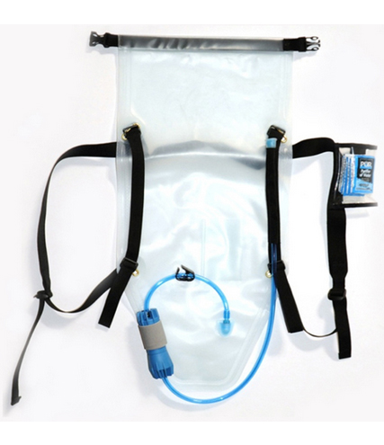
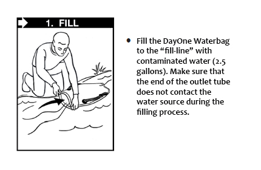
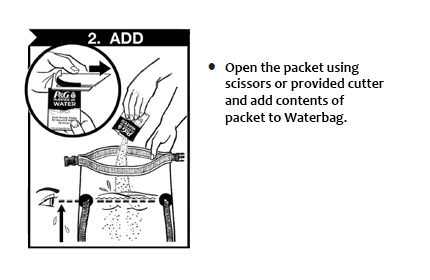
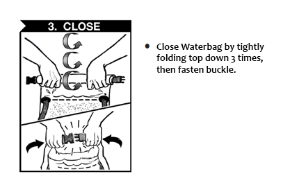
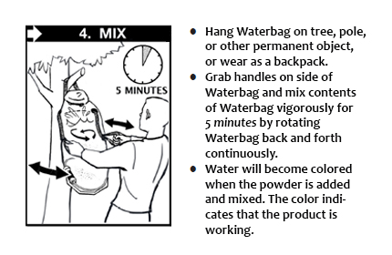
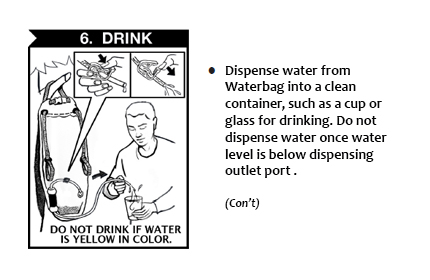

DayOne Purification Waterbag ™
A personal water treatment backpack that enables people worldwide to purify dirty water easily in a complete all-in-one device for water collection, transport, treatment, and protected storage. The DayOne Waterbag™ is a 10-liter water backpack designed for use exclusively with the Procter & Gamble water treatment packets that are distributed worldwide.

DayOne Waterbag™ Product Features:
- All-in-one patented solution
- Closed multi-treatment system
- Uses P&G Purifier of Water
- Meets emergency drinking water guidelines
- U.S. Marines Ranked #1 in water performance and user operation
- Clear and simple user instructions
- Easy to transport
- Tested Worldwide
DayOne Purification Waterbag™ Treats for:
- Sediment
- Arsenic
- Bacteria
- Lead
- Viruses
- Humic Acid
- Protozoan Cysts
- DDT
“Your invention will be a welcome tool for the relief groups and enable us to reach more people and more quickly during the critical time before infrastructure is rehabilitated.”
–Dr. Greg Allgood, Former Director of Procter & Gamble’s Children’s Safe Drinking Water Program
Product Details:
- Complete all-in-one device for water collection, transport, treatment, and protected storage.
- Ship 3x more Waterbags than collapsible containers.
- 10 Liter capacity, compact and reusable.
- Visual indication that water is clean.
- Roll down sealing closure ensures safety from recontamination.
- Clasped wide mouth opening for easy filling in only 3-inches of standing water.
- Backpack straps decreases fatigue in hauling water long distances.
- Meets WHO, Sphere, and US EPA emergency drinking water guidelines.
HOW TO USE







| DayOne Waterbag ™ Purification Specifications: | |
|---|---|
| Technology: | Multi-treatment processes (P&G's flocculant/disinfectant packets and an off-the-shelf 0.2-micron micro-filter). Removes or destroys: bacteria, viruses, cysts, dirty, soil, sediment, pollutants, and arsenic. |
| Capacity: | 10L per use (up to 60 uses depending on water quality). |
| Purification Time: | 30-minutes. |
| Flow Rates: | 0.5 L/min to 1.5 L/min. |
| Weight: | 20.8 oz/ 590 g. |
| Dimensions: | 14in x 31in flat/35.5 x 79 cm flat. 3in x 14in rolled/ 7.6 x 35.5 cm rolled. |
| Operation: | Support by universal pictographic instructions. Treatment shows visual indication that water is becoming cleaner. |
| Shelf-life: | Waterbag can be stored at room temperature for 10 years from the date of manufacture. P&G Purifier of Water™ can be stored for 3 years from date of manufacture. |
| Material Composition and Active Substrates: | The Waterbag is made from durable Food Grade plastic. Each P&G packet contains iron sulphate, calcium hypochlorite, and other ingredients. |
| Compact: | 1 standard pallet holds 1,000 Waterbags. |
| Stock ready for immediate dispatch from U.S. warehouse. | |